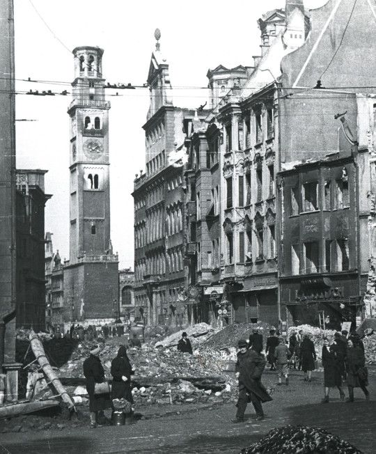
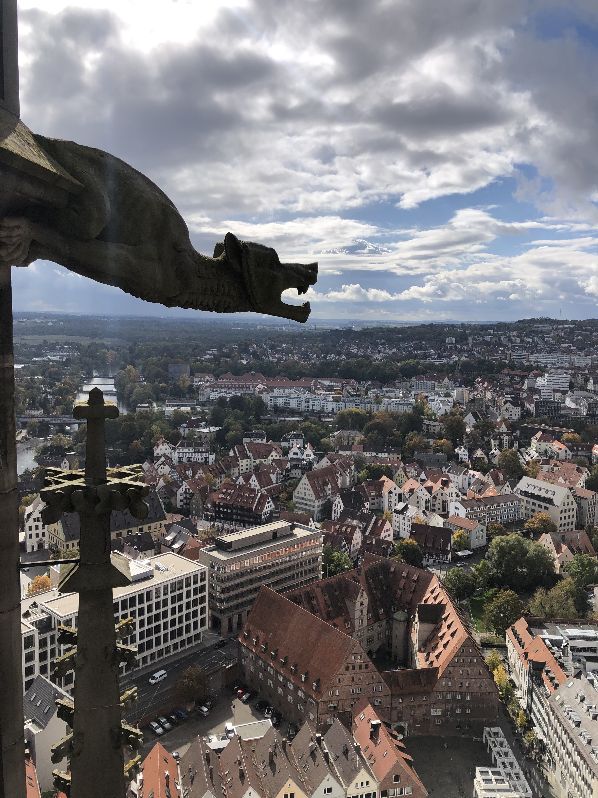

November 2020
AN AUTUMN WALK IN AUGSBURG

This is my fourth autumn in Germany and it is one of those perfect days where the heat of the sun can still pass through the cold air and warm your body.
Germany has taught me that these days are a gift and should not be wasted.
We finish breakfast and I tell Flo that we should go for a stroll.
A habit that I learned here in Germany where "going for a stroll" means just to go for a walk in the open air without any specific plan, without any demarcated route.
Just go out and let your feet guide you.
We walk for 20 minutes and stop at the town hall square where I see that only one of the 14 benches bordering the round square is empty.
We sit in front of the Christmas tree - a natural pine tree as big as a 6-story building.
—The tree looks kind of sad —I tell Flo
—Do you think so? I was actually thinking the opposite. It looks super nice with all its golden stars —he answers while contemplating the top of the pine tree.
—Maybe I get that impression because he is not surrounded by all the little brown houses.
It looks like abandoned in the middle of the square—I say while thinking about the Christmas market.
Every city, town, or village in Germany has a Christmas market whose tradition dates back to the 14th century.
I look to my right and see the police slowly entering their gray-and-blue patrol car.
I still can't get used to seeing them hanging around in the street.
Here, unlike in Venezuela, seeing the police on the street is the exception and not the rule.
They stop in front of the little bench on the right where two men about 30 years old sit
—You have to use the mask here— the policeman indicates to you after lowering the glass.
—But I'm drinking coffee. Do I have to use it now too?
—Yes, those are the rules.
The men adjust the mouthpiece, and the policeman slowly continues his journey around the rest of the square.
It’s November 2020. The second wave of coronavirus forces us to breathe the fresh autumn air through a piece of cloth.
The tree separated from its usual companions is a constant reminder that this Christmas will not be like every year.
This is my fourth autumn in Germany and it is one of those perfect days where the heat of the sun can still pass through the cold air and warm your body. Germany has taught me that these days are a gift and should not be wasted. We finish breakfast and I tell Flo that we should go for a stroll. A habit that I learned here in Germany where "going for a stroll" means just to go for a walk in the open air without any specific plan, without any demarcated route. Just go out and let your feet guide you.
We walk for 20 minutes and stop at the town hall square where I see that only one of the 14 benches bordering the round square is empty.
We sit in front of the Christmas tree - a natural pine tree as big as a 6-story building.
—The tree looks kind of sad —I tell Flo
—Do you think so? I was actually thinking the opposite. It looks super nice with all its golden stars —he answers while contemplating the top of the pine tree.
—Maybe I get that impression because he is not surrounded by all the little brown houses.
It looks like abandoned in the middle of the square—I say while thinking about the Christmas market.
Every city, town, or village in Germany has a Christmas market whose tradition dates back to the 14th century.
I look to my right and see the police slowly entering their gray-and-blue patrol car.
I still can't get used to seeing them hanging around in the street.
Here, unlike in Venezuela, seeing the police on the street is the exception and not the rule.
They stop in front of the little bench on the right where two men about 30 years old sit
—You have to use the mask here— the policeman indicates to you after lowering the glass.
—But I'm drinking coffee. Do I have to use it now too?
—Yes, those are the rules.
The men adjust the mouthpiece, and the policeman slowly continues his journey around the rest of the square.
It’s November 2020. The second wave of coronavirus forces us to breathe the fresh autumn air through a piece of cloth. The tree separated from its usual companions is a constant reminder that this Christmas will not be like every year.
Octubre 2020
DER KRIEG
The adults always talked about him, but she never saw his face, only his silhouette. She described him as a very tall and ugly man with big wooden stilts so he could peek through everyone's windows. He was a wicked person who could hear and see everything. This is how Hannelore imagined der Krieg - the war, which in German has a man's name - when she was just five years old.
Hannelore lives in an apartment surrounded by almost 80 floors, a collection of family photos and posters by Van Gogh. Sitting on a cream-colored fabric sofa with a blue flower pattern, she briefly reviews her life story that began in 1934 in Augsburg, Germany. Her real name is Johanna Eleonore because it was dictated by a priest who considered that "Hannelore" was not a Catholic name. She considers herself a curious person. Monika agrees explains that her grandmother always wants to know about her grandchildren's life. She emphasizes that what characterizes Hannelore's curiosity is a sincere desire to know what is going on in her grandchildren's lives. Hannelore wants to listen to them without prejudice, to advise them, and to keep their secrets safe. For her granddaughter, Hannelore - who used to lead a safe circle of women in the church to share their sorrows - is her best friend.
Although she lived through one of the most terrible periods in European history, she does not remember it as a dark episode in her life. She confesses that perhaps it is because she saw it from an innocent perspective. She used to think that arriving at school and shouting "Heil Hitler!" every morning was the normal thing to do. In her childish eyes, "Hitler was a normal man". Perhaps it is because she erased from her memory the details of the bombing of Augsburg in 1942. From the night of the attack —which target was an engine factory but in reality destroyed the entire city— Hannelore only recalls the moment when "sitting on the basement I thought we were going to die".
Perhaps it is because she had a strong and independent mother who taught her not to complain about living as a refugee on a farm in the town of Pfaffenhofen. A mother who stressed the importance of not looking back and adjusting to their new temporary home. A mother who taught her to start working on anything useful to her hosts, such as taking care of the cattle, harvesting the crops in the field, or collecting wood in the forest.
To hear about her life is to hear about her family. About her grandmother who had 18 children or her widowed mother who traded her cigarette ration for anything else they needed. About her relatives who sent them aid boxes from the USA after the war. About her uncle who met his wife when he stopped his tank when he saw her walking down the street and ask her out. About her husband whom she met at her first job and to whom she - contrary to the rules of the time - asked him to marry her in a letter sent from London.
Johanna Eleonore-who is a woman who stresses the importance of gender equality and diversity-confesses that 81 years later, she still sees the silhouette of der Krieg from time to time.
Octubre 2020
THE TALLEST CHURCH IN THE WORLD
The tallest church in the world is only 42 minutes away from Augsburg —the German city where I have lived for almost two years- and I didn't know that. It's not that I haven't seen that gray building 163 meters high on one of the train trips on the way to Berlin because it's like going to Caracas and not seeing the Avila: impossible to ignore. It just never occurred to me to ask St. Google something as simple as the name of that cathedral-like church.
The main church of Ulm is protestant and is about 520 km away from Berlin, as is indicated by the golden circle on the floor that marks the distance between Ulm and 20 other cities. Today I can finally see the church very close while standing still in Münster square. My brain registers it as if it were divided into three parts. The piece on the left and the right are symmetrical, made of bricks, and their shape resembles the houses that children paint when they learn to draw. The difference is that in this "drawing" stands a giant tower that grows as abruptly as a teenager on school vacation. I want to stand longer in front of this church whose construction began in 1377 and ended in 1890. I want to observe in more detail its Gothic style and its tower with its gray stones that have an ash tone due to the time that has passed by. The combination of rain and autumn cold pushes me inside the church in search of a warm shelter.
My boyfriend Flo and I decided to insert in the machine the five euros per person that you have to pay to go up the tower. I am focused on walking up step by step, ignoring both my task of being attentive to everything around me and my heart beating begging for mercy. Five hundred and sixty steps later we reach the top of the tower. The rules of Coronavirus dictate that I can only walk in one direction so as not to clash with other visitors. I stop halfway and observe in the distance the fishermen's district with its white houses and triangular red brick roofs. This organized mess is delimited by the library - a pyramid of blue glass that stands out - and by the Danube River.
On the way down, I find what is now my favorite part of the tower: a room where white wooden frames hang on the right and left with 33 black and white pictures of religious temples ranging from the Sagrada Familia in Spain to the Golden Temple in India. In the middle, there is a stone cylinder that resembles those "wells of good luck" where people toss a coin and make a wish. I approach it and see that it is closed, but it has four rectangular openings protected by glass that give a view of 10 of the 13 bells. Each one has a name and its weight ranges from 345 to 4192kg. Taufglocke -one of the smallest bells with 93cm in diameter and 506kg of weight- starts swinging, spreading the sound from the tower to the rest of the city and reminding me that soon we must start the journey back home.
Agosto 2020
THE TELERIN FAMILIY

Few tourists, like my boyfriend Flo and I, have descended, in times of pandemic, the more than 200 steps that lead to Playa Camilo in southern Portugal. The beach is like a little matchbox with direct access to the sea, surrounded by rock formations the size of buildings of about ten floors and whose colors remind one of a layered cake ranging from light ochre to ash. It is a beach where the greatest noise comes from the water brushing against the sand.
The Telerín family - made up of 5 adults, 6 children, 1 inflatable boat, 3 life jackets, 7 towels, 4 chairs, 3 caves, 2 parasols and a beach ball - arrived at midday, disrupting the space and sound. From the moment they started to come down the stairs, the eyes of all the couples on the beach were focused on the "strange" group. With frown faces seemed as if everyone was asking in unison: are you really going to stay here?The Telerin family did not realize what was happening around them, they were immersed in ordering their chaos: towels here, chairs there, open the sunshade, take out the food, take the boat to shore, chase the children for the sunscreen hour. They were moving so fast and so clumsy that they did not keep the social distance that is part of our new normality.
The scene takes me back to the year 2000 when the Falcon family platoon was settling into the CRPU club on the Venezuelan coast. "I wonder if people were looking at us like that and I don't remember, I just think of the magic moment when I was running to the sea with my cousins.

Hi! I'm Marinell, I'm a Venezuelan economist living in Germany. I'm a super curious person! I constantly want to explore new places, find new restaurants to eat, meet people from all over the world and discover new skills to learn. Speaking of learning, this year I decided that I wanted to learn something new which is exactly what brought me here. I started writing short stories and I want to share them with you. You know what the best part is? That I programmed this website all by myself thanks to REDI School and my amazing teachers Catalina, Djalel and Steffan.